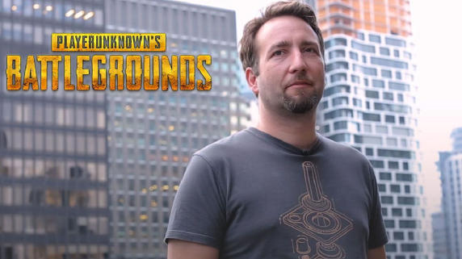

El diseñador principal Brendan Greene, mejor conocido por su nickname "Playerunknown", previamente había desarrollado (inspirado en la película Battle Royale) el mod "DayZ: Battle Royale", una rama del popular mod DayZ para ARMA 2. Greene se había inspirado para crear la modificación Battle Royale,7 ya que encontró que en la mayoría de los juegos de tiros en primera persona multijugador, había demasiada repetición, ya que los mapas eran pequeños y fáciles de memorizar. Quería crear algo con aspectos más aleatorios para que los jugadores no supieran qué esperar, creando un alto grado de repetición; esto se hizo mediante la creación de mapas mucho más grandes que no podría ser fácilmente memorizados, y utilizando la colocación de elementos al azar a través de ella. Greene también se inspiró en una competición en línea para DayZ llamada Survivor GameZ, que contó con una serie de Twitch.tv y YouTube streamers peleando hasta que solo quedaron unos pocos. Como él no era un streamer en sí mismo, Greene quiso crear un modo similar del juego que cualquier persona podría jugar. Para la versión de Android y IOS fue desarrollado por la empresa de vídeo juegos Tencent Games.
El desarrollo comenzó a principios de 2016, con planes para tener el juego listo en un año. Kim sirvió como productor ejecutivo para el juego. Bluehole comenzó con un equipo de unos 35 desarrolladores que apoyan el trabajo de Greene, pero que a partir de junio de 2017 se ha ampliado a 70 y se espera que aumente de nuevo a 90 con un nuevo estudio con sede en Madison, Wisconsin. Greene dijo que muchos de estos desarrolladores están voluntariamente poniendo más horas de trabajo en el juego debido a su dedicación al proyecto y no por cualquier mandato de Greene o Bluehole de la gestión. Además de Bluehole, Greene también da crédito a Bohemia Interactive, los desarrolladores de ARMA y DayZ, por el apoyo con animaciones de captura de movimiento a través de su estudio de Praga.